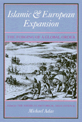

Distinguished writers provide new approaches to cross-cultural history
Distinguished writers provide new approaches to cross-cultural history


 Distinguished writers provide new approaches to cross-cultural history
Distinguished writers provide new approaches to cross-cultural history

|  |
Islamic and European ExpansionThe Forging of a Global Orderedited by Michael Adaspaper EAN: 978-1-56639-068-2 (ISBN: 1-56639-068-0) |
"This is a very good and useful collection of essays, all of a very high scholarly quality.... [E]xtensive coverage of ethnic and gender issues will enhance its appeal to insturctors."
—Craig Lockard, Professor of Social Change and Development, University of Wisconsin-Green Bay
This volume of essays makes available the essential background information and methods for effective teaching and writing on cross-cultural history. The contributors—some of the most distinguished writers of global and comparative history—chart the advances in understanding in their fields of concentration, revealing both specific findings and broad patterns that have emerged.
The cover image, "The Arrival of the Dutch at Patane," from Theodore de Bry, India Orientals, Part VIII (Frankfurt: W. Richteri, 1607) depicts the two key phases of global history that are covered by the essays. Muslim inhabitants of the town of Patane on the Malayan peninsula warily confront a Dutch landing party whose bearing suggests that it is engaged in yet another episode in the saga of European overseas exploration and discovery. The presence of the Muslims in Malaya reflects an earlier process of expansion that saw Islamic civilization spread from Spain and Morocco in the west to the Philippines in the east in the millennium between the 7th and 17th centuries. The Dutch came by sea to an area on the coastal and island fringes of Asia, the one zone where their warships gave them a decisive edge in this era. The citizens of Patane had good reason to distrust the European intruders, since the Portuguese who had preceded the Dutch had used force whenever possible to control the formerly peaceful trade in the region and often to persecute Muslim Peoples.
Excerpt available at www.temple.edu/tempress
Introduction – Michael Adas
1. Islamic History as Global History – Richard M. Eaton
2. Gender and Islamic History – Judith Tucker
3. The World System in the Thirteenth Century: Dead-End or Precursor? – Janet Lippman Abu-Lughod
4. The Age of Gunpowder Empires, 1450-1800 – William H. McNeill
5. The Columbian Voyages, the Columbian Exchange, and Their Historians – Alfred W. Crosby
6. The Tropical Atlantic in the Age of the Slave Trade – Philip D. Curtin
7. Interpreting the Industrial Revolution – Peter N. Stearns
8. Industrialization and Gender Inequality – Louise A. Tilly
9. "High" Imperialism and the "New" History – Michael Adas
10. Gender, Sex, and Empire – Margaret Strobel
The Contributors
 | Michael Adas is Abraham Voorhees Professor of History at Rutgers University, New Brunswick. He is currently editor of the American Historical Association's series on Global and Comparative History and co-editor of the Cambridge University Press series on "Studies in Comparative World History." He has published numerous articles and books, including most recently (with Peter Stearns and Stuart Schwartz) World Civilization: The Global Experience (1992) and Turbulent Passage: A Global History of the Twentieth Century (1993). |
Contributors: Janet Lippman Abu-Lughod, Alfred W. Crosby, Philip D. Curtin, Richard M. Eaton, William H. McNeill, Peter N. Stearns, Margaret Strobel, Louise A. Tilly, Judith Tucker, and the editor.
Critical Perspectives on the Past, edited by Susan Porter Benson, Stephen Brier, and Roy Rosenzweig.
Critical Perspectives on the Past, edited by Susan Porter Benson, Stephen Brier, and Roy Rosenzweig, is concerned with the traditional and nontraditional ways in which historical ideas are formed. In its attentiveness to issues of race, class, and gender and to the role of human agency in shaping events, the series is as critical of traditional historical method as content. Emphasizing that history is itself an interpretation of material events, the series demonstrates that the historian's choices of subject, narrative technique, and documentation are politically as well as intellectually constructed.
© 2015 Temple University. All Rights Reserved. This page: http://www.temple.edu/tempress/titles/886a_reg.html.